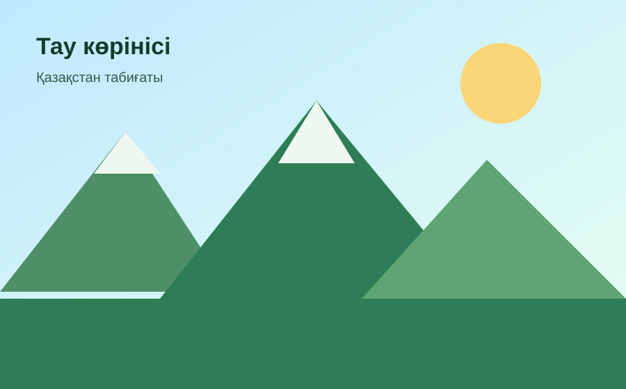

Табиғи орындар
Таулар, көлдер және қалалық табиғи аймақтар туралы қысқаша мәлімет.
Студенттік веб жоба
Бұл сайт Қазақстандағы табиғи орындар, экотуризм мәдениеті және табиғатты қорғау туралы қысқаша әрі пайдалы ақпарат береді.

Qazaq Nature сайты білім беру мақсатында жасалды. Сайтта бірнеше бет, беттер арасындағы мәзір, бет ішіндегі навигация, суреттер, аудио, бейне және кері байланыс формасы бар.
Таулар, көлдер және қалалық табиғи аймақтар туралы қысқаша мәлімет.
Саяхат кезінде табиғатқа зиян келтірмеу және тазалық сақтау мәдениеті.
Пікір қалдыруға арналған қарапайым әрі жұмыс істейтін форма.
Төмендегі аудио сайттың медиа талабын орындау үшін қосылды.